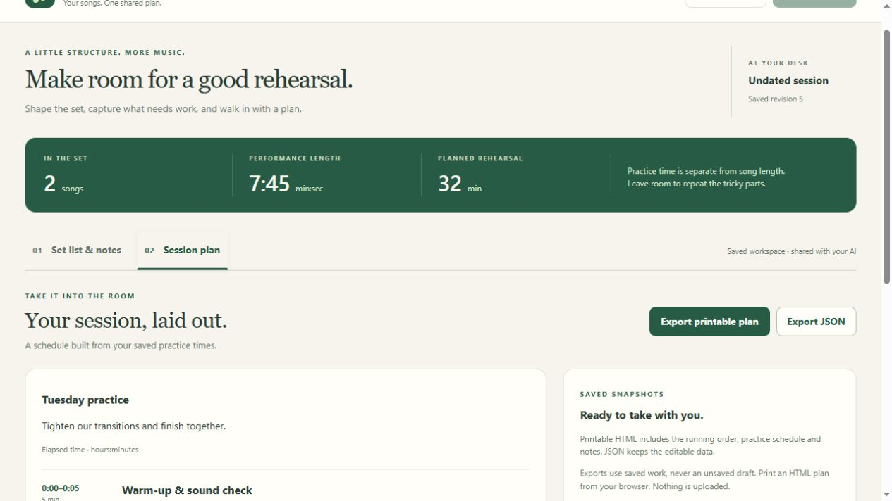

Two Hands Network · Windows x64 · 0.1.0-preview.8 creator-first preview
Make an AI workspace around the job you want to do—with your own controls, tools and saved projects. I’m-Ditto supplies the foundation; your connected AI helps build your I’m.
Start the app: extract the whole ZIP, then double-click Launch Im-Ditto.cmd in the extracted folder. This guide does not start programs or grant permissions.
Launch Im-Ditto.cmd. Node is included. The app opens on Make my I’m, not an example catalogue.Not sure where to start? Open How to Ditto → Walk me through making my own in the app, or read Make your own I’m. Follow a real brief-to-workspace journey, then change the job to suit you. The personal Bridge, Studio and Board-Game Workshop are further worked examples—not limits or required installations.
We asked for a rehearsal desk, built it through the connected chat, used it by hand and with AI, exported a plan, then added a new feature without losing the saved work. This is an assisted creation walkthrough, not an instant-build or independent novice test.

Follow the real creation journey · Adapt the method to your own job
This preserved, silent captioned tutorial shows preview 2's setup and example-use screens—not the current creator-first landing page or a complete app build. Use it for the shared Bridge/ChatGPT connection steps. Already connected to Bridge? Skip to 2:58. The later connection/output screens are labelled earlier verified captures.
The original owner-controlled AI bridge. It remains a separate app and supplies the ChatGPT connection.
Not bundled or replaced.
Arrange pictures, audio and captions, then export an MP4.
Bundled. Requires FFmpeg and FFprobe.
Edit rules and cards. Export a printable HTML kit and a JSON backup.
Bundled. Ready with the included runtime.
Yes: give its task access to the intended build folder and use the generated build brief. Once your I’m is installed, choose the local Codex route in Connection and use its generated check prompt. This is not an added Bridge-to-Codex relay.
Authorize the intended folder through your AI tool or Bridge’s local owner controls. I’m-Ditto does not bypass a pause or grant itself permissions. Do not broaden access to your whole computer to clear an error.
Generate a new prompt after a restart or expiry. The one-use code lasts 15 minutes. The check confirms one successful inspection, not permanent connectivity.
Use Board Games immediately, or install the missing tools from a source you trust and restart. They are not downloaded silently.
Extract the whole ZIP first. Keep runtime/node.exe and ditto/ alongside the launcher. Read local-profile/host.log for details. Verify the package source; do not disable Windows protection to get past a warning.
Work is saved under local-profile/workspaces/. Keep that folder when updating. Use Stop I’m-Ditto and its apps; closing a browser tab alone does not stop the host.
Making your own and choosing a ready-made one serve different needs. Someone may prefer the convenience of a polished, tested workspace with support. The proposed I’m-Store would let creators offer free or paid I’ms. It is a future idea, not an implemented shop or a guarantee that every package is trustworthy.
Trust matters. This is trusted native preview code, not an operating-system sandbox. Package hashes check bytes, not an author’s identity. Only install packages you trust. AI access remains under your control.